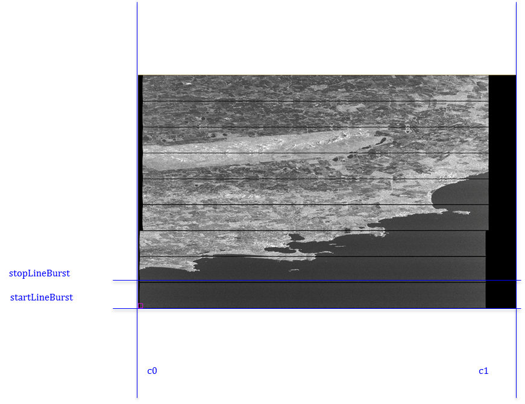
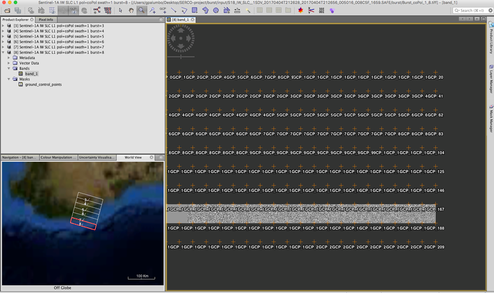
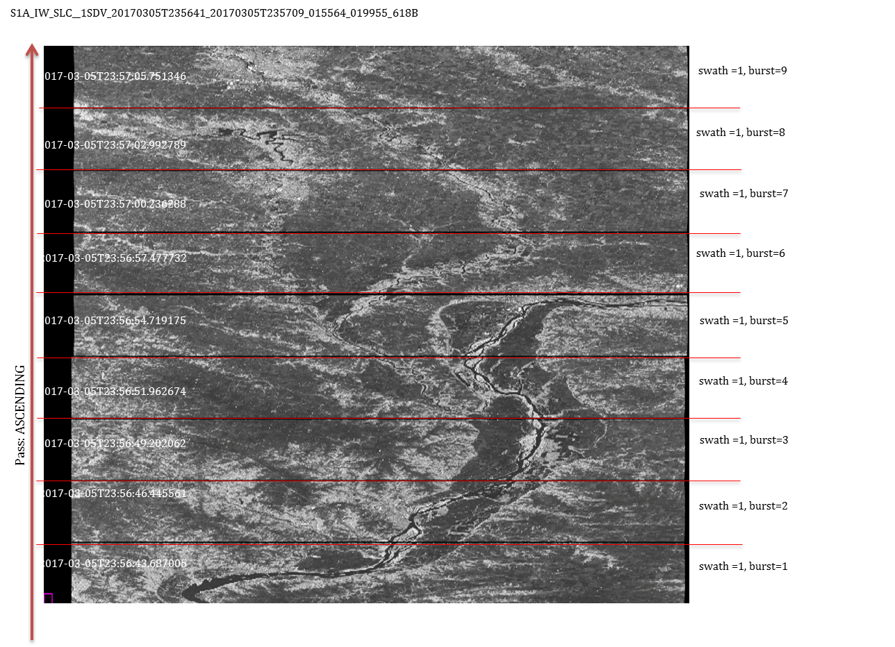
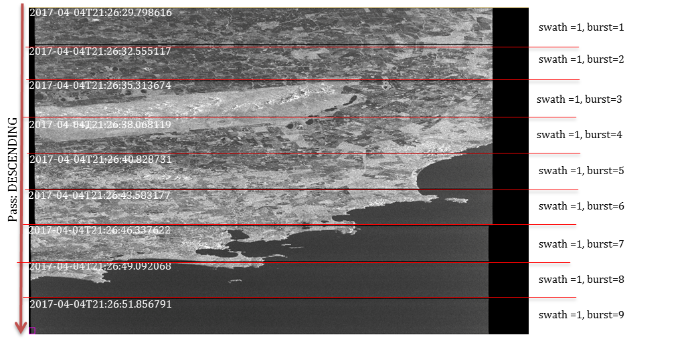

DHuS Transformations
Introduction
The DHuS multi-mission design allows to manipulate the data at the time of ingestion. The definitions and configuration of the Transformations are plugged through the DRB Cortex Ontology mechanism. An example of basic algorithm that can be integrated in to a DHuS addon is available here
PREREQUISITES:
- Python 2.7
- GDAL library (for python2.7 : from osgeo import gdal: https://trac.osgeo.org/gdal/wiki/DownloadingGdalBinaries)
INPUT =Sentinel1 SAFE product
mode=IW or EW
type=SLC
OUTPUT = folder 'burst ' in Sentinel1 SAFE product with all tiff for pol, burst, swath
ES: Burst_coPol_1_1.tiff ('Burst'+Pol+swath+burst)
EXAMPLE USE=
python2.7 getBurst.py ../input/S1B_IW_SLC__1SSV_20170303T095921_20170303T095951_004542_007E9A_489E.SAFE
TREE:
burst
|____config
| |____config.ini
| |____manifest.xml
|____input
|____lib
| |____config.py
| |____getBurst.py
| |____level1.py
The file burst/lib/getBurst.py :
• For each swath and for each polarization get the correspondent tiffProduct
• From the correspondent annotation file get the number of burst, linesPerBurst and NumberOfSamples
• For each burst get the startTimeBurst(azimuthTime)
• From the geolocationGrid extract the line (startLineBurst) correspondent to the startTimeBurst (convertion [azimuthTimeàline] using the GeolocatedGrid )
• Build the stopLineBurst(Figure 1)
• Build the first sample and the last sample (C0 and C1) (Figure 1)
• Cut the tiffProduct whit startLineBurst,stopLineBurst,C0 , C1
• Creates the ‘burst’ folder inside the SAFE product. The burst folder will contain all the GEOtiff bursts divided by polarization, swath, and burst: ES: Burst_coPol_3_7.tiff (3 = swath, 7 = burst) (Figure 2)
• Each GeoTiff burst is associated with a manifest with information about the original product and burst information.
The file burst/lib/level1.py makes:
• The SAFE folder parser
• Parses the manifest.safe
• Parses the annotation files
In the burst/config/config.ini there are the configuration parameters in this case there is the path of GDAL library.
The burst/config/manifest.xml is a template for to create the manifest for each burst.

Figure 1: start e stop line and c0 /c1 samples of a burst

Figure 2 : output burst whit SNAP tool
Information about the set of metadata for get a burst(2):
• In the annotation data set are reported the section:
Swath Timing : The swath timing data set record contains information for each burst within a swath for TOPSAR products and is specific to IW and EW SLC products. The purpose of the information included in this file is to allow users of IW and EW products to extract bursts from the image files included with the product.
GeolocationGrid : The geolocation grid data set record contains a matrix of points defining the slant range time, incidence angle, and geodetic latitude and longitude positions at various range and azimuth positions within the image.
• In the manifest.safe there are the information about:
- number of polarization
- number of swath
• In the section Swath Timing there are the information about :
linesPerBurst : Number of range lines within each burst (constant for all bursts within the swath).
samplesPerBurst : Number of range samples within each burst (constant for all bursts within the swath).
count :Number of burst records within the list
And for each burst there is :
azimuthTime : Zero Doppler azimuth time of the first line of this burst [UTC].
• To convert the azimuthTimeàline make used the GeolocatedGrid
• In the section GeolocatedGrid there are the information about:
azimuthTime: Zero Doppler azimuth time to which grid point applies [UTC].
line: Reference image MesuramentSet Data line to which this geolocation grid point applies.
Information about the SLC product TOPSAR (1) :
• TOPSAR SLC products contain one image per sub-swath and one per polarization channel, for a total of three (single polarization) or six (dual polarization) images in an IW product and a total of five (single polarization) or ten (dual polarization) images in an EW product.• Each image pixel is represented by a complex (I and Q) magnitude value and therefore contains both amplitude and phase information. The imagery is geo-referenced using orbit and attitude data from the satellite.
• L1 SLC images are generated in 32-bit signed integer format with each pixel represented by two interleaved I&Q 16-bit signed integer samples in the order: IQIQIQ…
• Each sub-swath image consists of a series of bursts, where each burst has been processed as a separate SLC image. The individually focused complex burst images are included, in azimuth-time order, into a single sub-swath image with black-fill demarcation in between
• For each image is associated with an annotation data sets. The annotation data set contain metadata that describes the properties and characteristics of the measurement data or how the measurement data was generated

Figure 3:numeration of bursts for a first swath of a SLC IW in ascending pass
S1B_IW_SLC__1SDV_20170404T212628_20170404T212656_005016_008C5F_1659

Figure 4: numeration of bursts for a first swath of a SLC IW in descending pass
Reference Documents:
(1) Sentinel-1 Level 1 Detailed Algorithm Definition, S1-TN-MDA-52-7445, 1/6, NOV. 28, 2014
(2)Sentinel-1 Product Specification , S1-RS-MDA-52-7441,3/2 , 14/03/2016